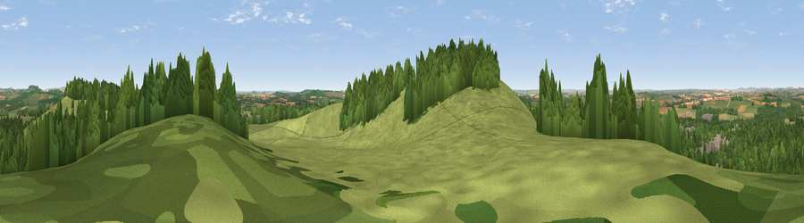

Viewpoint near Bulford
#18287 in England · top 23% of its area beats it · near BulfordWhere it is
The exact computed spot (SU 19725 43175). Click the marker for map links.
The view, rendered

A 360° render of this exact spot computed from the terrain model, tree cover and land cover — summer colours, afternoon light, calibrated against photographs of famous viewpoints. Real trees, hedges and buildings will differ in detail.
The panorama
Grey silhouette: terrain skyline in each direction (720 bearings, Earth curvature and refraction included). Dashed green: skyline with trees (+15 m) and buildings (+8 m) as obstacles. Blue strip: how far the ground is visible on each bearing.
Where the view opens
Wedge length = distance to the farthest visible ground on that bearing (vegetation-aware). Rings at 10, 25 and 50 km.
What fills the view
53% grassland · 31% woodland · 11% cropland · 5% built-up
Angular shares of the visible panorama (visual magnitude), not map area. Landscape diversity 0.47 (0–1 Shannon).
Key numbers
More beautiful places nearby
The staircase of upgrades: each row has a higher view potential than everything closer. Driving times are estimates from straight-line distance, calibrated against real road routing — check an actual route before setting out.
| Place | Direction | Drive | Score |
|---|---|---|---|
| Viewpoint near Bulford | SSW · 0 km | ~2 min | 70.3 |
| Viewpoint near Oare | N · 20 km | ~35 min | 72.9 |
| Martinsell viewpoint | N · 21 km | ~35 min | 77.3 |
| Viewpoint near Berwick St John | SW · 35 km | ~54 min | 78.2 |
| Viewpoint near Buriton | ESE · 57 km | ~79 min | 80.0 |
| Tennyson Down | SSE · 59 km | ~81 min | 83.2 |
| Viewpoint near Brook | SSE · 61 km | ~83 min | 84.2 |
| Brook Down | SSE · 61 km | ~84 min | 85.3 |
51.18746, -1.71915 · source: screening · position refined by local search. Computed location — check access rights before visiting.